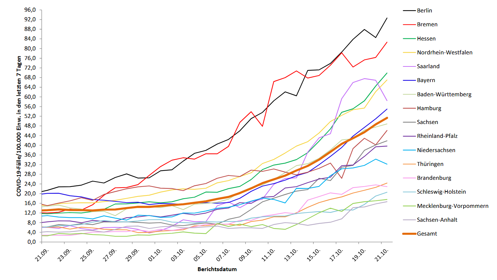

2 What is surveillance?
2.1 Information for action
- On the 28th of October 2020 the German government based their decision to do a lockdown on the surveillance system

2.2 Definition
Public health surveillance is the systematic ongoing collection, collation and analysis of data for public health purposes and the timely dissemination of public health information for assessment and public health response as necessary. 1
2.3 Other surveillance systems
- Neighbourhood surveillance (People watching other people)
- Rhizomatic surveillance (Unkown actors watching secretly)
- Top-down-surveillance (State actors watching their people)
2.4 Objectives
| Objective | Description |
|---|---|
| ALERT | Serves as an early warning system for impending public health emergencies |
| ACTION | Allows case based measures, group based measures, medical measures, community measures |
| EVALUATE | Documents the impact of an intervention, or track progress towards specified goals |
| DESCRIBE | Monitors and clarify the epidemiology of health problems |
| INFORM | Allows priorities to be set and to inform public health policy and strategies |
2.4.1 Alert
- There are surveillance systems that are build to detect threats to human and animal health.
- Surveillance systems that focus on this aspect usually have to be timely
2.4.2 Action
- Surveillance systems are set up to open the possibilty to take action.
- Case based measures are measures like information of cases and contacts or quarantine or isolation
- Group based measures are measures that affect a group of people. Examples are mask mandates
- Medical measures are measurements taken by health care personel. An example ist the substitution of an antibiotic drug with another because of a higher resistancy
- Community measures are measures taken by the people upon recieving information about an infectious disease. An example would be poeple starting to wear a mask if the SARS-CoV-2 incidence goes up
2.4.3 Evaluate
- Interventions in public health should eventually have an impact. So if somebody was to launch a campaign for hygeinic cooking the impact could be measured in the campylobacter surveillance
2.4.4 Describe
- Surveillance can serve as a basis for scientific research. The change of variants of a pathogen in relationship to vaccination is an example
2.4.5 Inform
- In public health long term decisions about resources are made by politicians. Surveillance systems can guide those decisions.
2.5 Examples
2.5.1 Campylobacter

2.5.2 Rotavirus

2.5.3 SARS-CoV-2

World Health Assembly 2005 (similar definition from Langmuir AD. William Farr: Founder of modern concept of surveillance. Int J Epidemiol 1973;5:13-8)↩︎